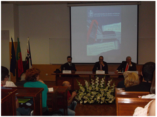

FCSH entrega prémios de mérito aos alunos
A Faculdade de Ciências Sociais e Humanas realizou no dia sete de maio a primeira cerimónia de reconhecimento de Mérito dos seus alunos, assinalado com a entrega de diplomas. A cerimónia ficou ainda marcada pela assinatura de um protocolo de cooperação entre a UBI e o Comité Olímpico de Portugal.
Após da distribuição dos prémios de mérito ao melhor aluno de cada curso que decorreu na cerimónia do 28º aniversário da UBI, a Faculdade de Ciências Sociais e Humanas, na véspera do seu próprio aniversário, entregou diplomas de mérito aos alunos do primeiro ciclo que tiveram media igual ou superior a 16 valores no ano letivo anterior.
A cerimónia abriu com a intervenção de João Canavilhas, Vice-Reitor da UBI, que afirmou que “a excelência deve ser premiada e destacada, porque não queremos que os alunos tenham apenas aprovação às cadeiras, mas queremos mais que isso”. Para além disto o vice-reitor falou da importância do estudo, que leva aos alunos ubianos a terem classificações elevadas: “Quando as pessoas estudam com prazer e gostam daquilo que fazem, naturalmente o estudo passa a ser algo que fazem com gosto”.
Na cerimónia de mérito foram entregues 16 diplomas pelos diretores de curso, dos quais três pertenceram ao curso de Ciência Politica e Relações Internacionais, um ao curso de Ciências do Desporto, quatro ao curso de Economia, dois ao curso de Gestão, cinco ao curso Psicologia, e um ao curso de Sociologia. A aluna premiada, Ana Lucas, de Ciências do Desporto, afirmou que ser uma das melhores é “um lema de vida para voar mais alto”.
Presidente da única Faculdade das cinco existentes na UBI a atribuir diplomas de mérito aos alunos, Pedro Guedes de Carvalho disse que “o diploma não é mais do que um pedaço de papel assinado com umas palavras de elogio, mas é importante porque fica anexado ao curriculum. Nesta faculdade premiamos e reconhecemos o mérito dos alunos que se esforçaram o suficiente para ter médias acima dos 16 valores”.
A cerimónia de Reconhecimento de Mérito dos estudantes ficou também marcada pela intervenção de José Manuel Constantino, presidente do Comité Olímpico de Portugal, e pela assinatura de um protocolo de cooperação entre as duas instituições.
publicado em: quarta-feira, 14 de Maio de 2014